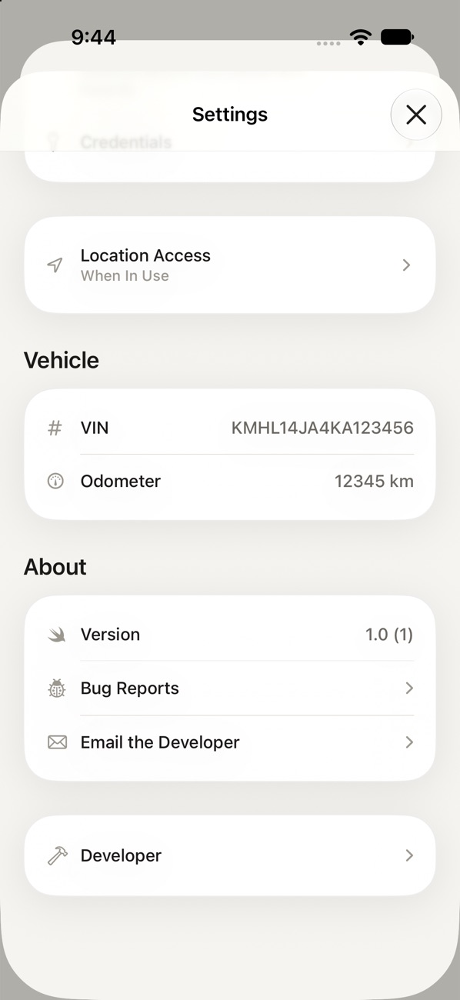
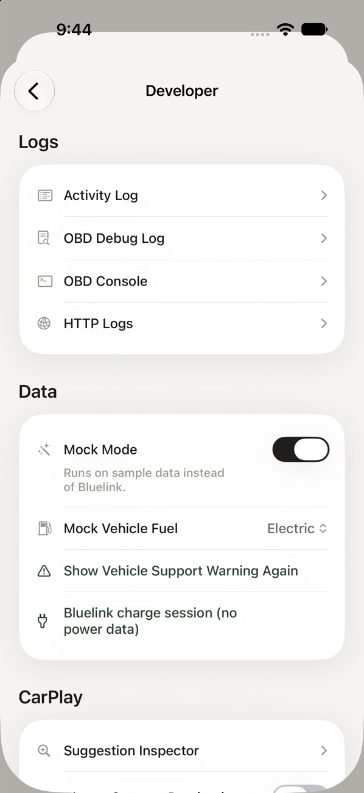
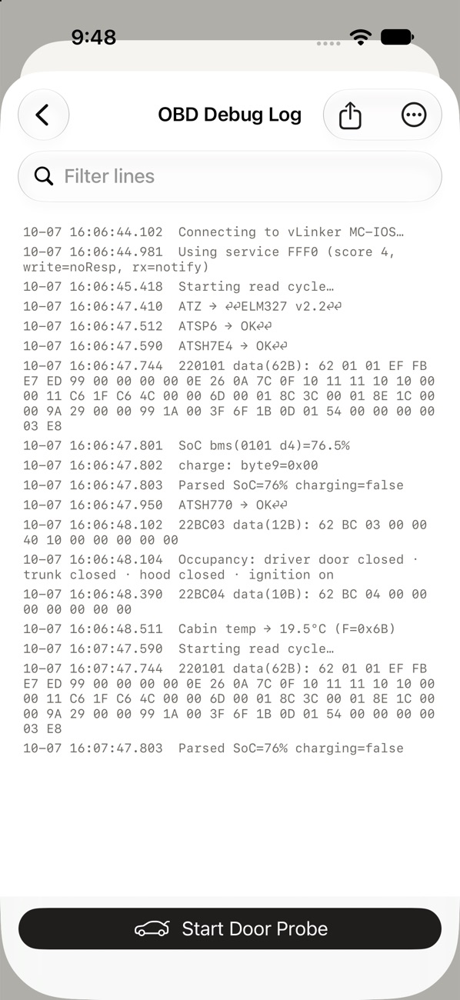
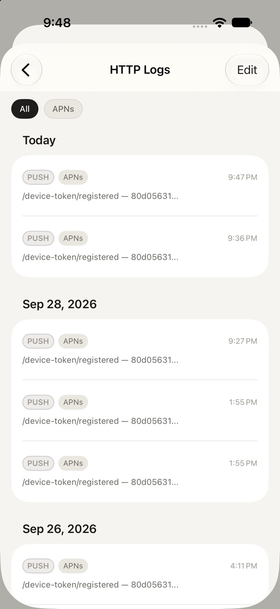
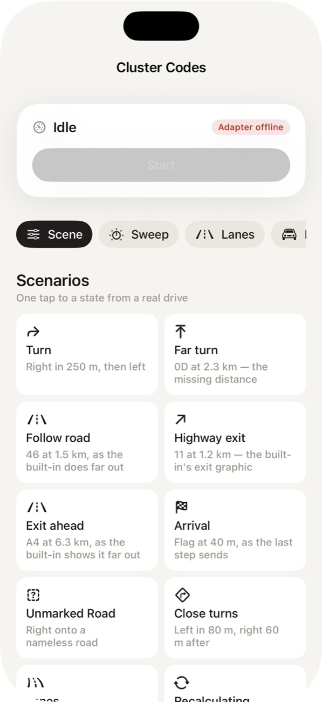
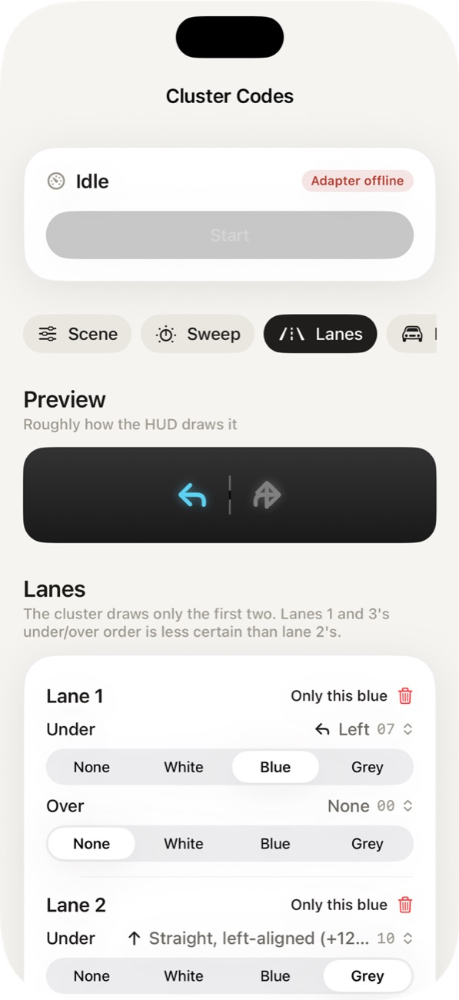
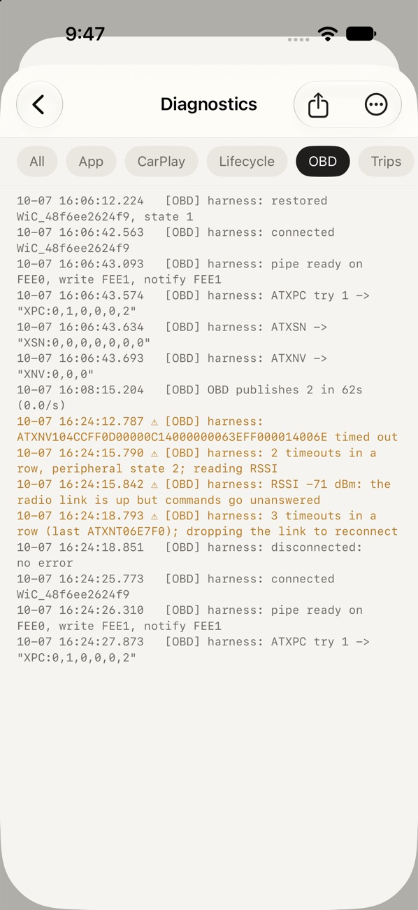
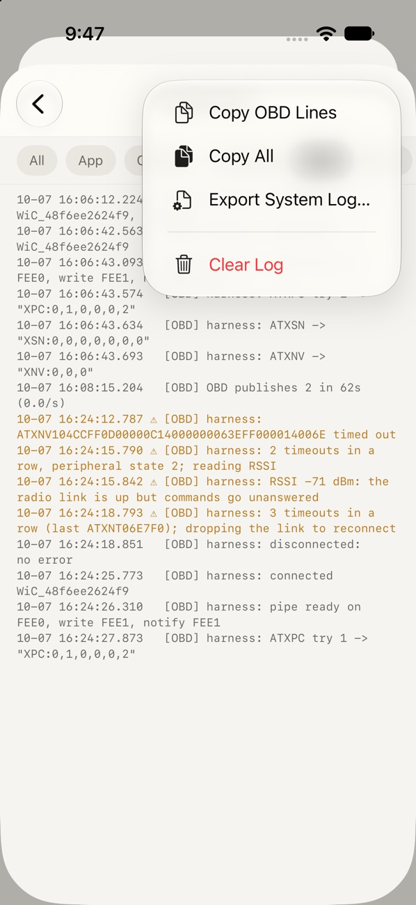
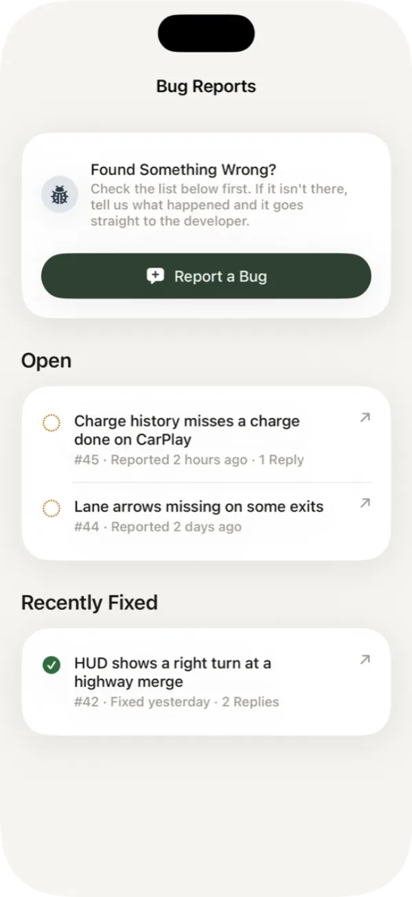

Troubleshooting
Logs, common problems and bug reports.
Developer Menu
The diagnostic tools are hidden until you unlock them. Open Settings (the gear on the Service tab), scroll to the bottom, and tap the version number seven times. A Developer row appears below About.


It contains:
| Tool | What It Shows |
|---|---|
| Activity Log | A timeline of everything the app did, filterable by category. Start here. |
| OBD Debug Log | Raw requests and replies between the app and the OBD-II adapter. |
| HTTP Logs | Every request to Bluelink and the app's other services, with timings and results. |
| CAN Sniffer and Cluster Codes | Harness adapter tools for recording the car's CAN traffic and testing what the cluster and HUD can display. They appear once a connected harness confirms its firmware supports them. |
Other Logs
The OBD Debug Log shows every command sent to the OBD-II adapter and its raw reply, with a filter box for finding a specific request. HTTP Logs groups requests by day and by service.


Cluster Codes
Cluster Codes lets you send test scenes to the cluster and HUD while parked: a turn, a highway exit, an arrival flag, or a hand-built lane layout with a preview of roughly how the HUD will draw it. It's the fastest way to check what the car accepts before a drive.


Activity Log
Pick a category to narrow the timeline. Warnings and errors are flagged, so problems stand out.
| Category | Covers |
|---|---|
| Lifecycle | App launches, background refreshes and why a refresh did or didn't run |
| OBD | Both adapters: connecting, pairing, readings, timeouts and reconnects |
| CarPlay | CarPlay screens, routes, camera and suggestions |
| Cluster | Everything sent to the cluster and HUD during a route |
| Trips | When drives start, end and get filed |
| Network and App | Connectivity changes, memory and general app events |
The screen opens as Diagnostics. Use the share button to send the whole log as a file, or the ⋯ menu to copy just the category you're looking at. The in-app viewer keeps the most recent lines, so share the file soon after a problem happens.


A typical healthy connection to the harness adapter looks like this:
[obd] harness: connected WiC_xxxxxxxxxxxx
[obd] harness: pipe ready on FEE0, write FEE1, notify FEE1
[obd] harness: ATXPC try 1 -> "XPC:0,1,0,0,0,2"Common Problems
Stale Status
Bluelink serves the status the car last uploaded, and the car only uploads now and then. Check the source mark next to the age (see Status Line). Tap refresh to ask the car directly, or connect the OBD-II adapter for live readings. The Lifecycle log shows each refresh and why it was skipped, for example refresh: skipped — status 13m old, under the 240m threshold.
Adapter Not Found
- Make sure the car is on, since most adapters power down with it.
- Confirm it's a Bluetooth LE adapter. Classic Bluetooth adapters never appear on an iPhone.
- Close any other app that might be holding the adapter's connection.
Harness Won't Reconnect
If Settings › OBD Adapter shows Pairing Lost, the adapter and your iPhone no longer agree on their pairing. Tap Forget in the app, forget the WiCAN in iOS Settings › Bluetooth, then pair it again.
If it says connected but nothing works, look for this in the OBD log:
[obd] harness: 2 timeouts in a row, peripheral state 2; reading RSSI
[obd] harness: 3 timeouts in a row (last ATXPC); dropping the link to reconnectThe app drops a connection that stops answering and reconnects on its own. The RSSI line between those two says whether the radio link was still up, which helps tell a firmware problem from a lost connection. Please include those lines in a bug report.
No Cluster Directions
- CarPlay Directions in Cluster only appears in Settings while the harness adapter is connected with firmware that supports it.
- Directions follow a Numen route in CarPlay, not Apple Maps or another app.
- The Cluster log records each update.
not sent: adapter not connectedmeans the harness link dropped.
Preconditioning Refused
The car makes the final call. It refuses or stops when the battery is already warm enough or the charge is too low, and the app reports that within about 50 seconds. That's the car working as intended, not a fault.
Stale Widgets
Open the app once. Widgets redraw from the app's latest snapshot, and iOS limits how often a widget can refresh in a day.
Command Failed
Bluelink commands travel over the car's cellular connection and can take up to a minute. If Bluelink reports the car is busy, the app retries on its own. The HTTP Logs show the exact response Bluelink sent.
Reporting a Bug
Go to Settings › Bug Reports. The list shows bugs already reported from the app, open and recently fixed, so check it first. If yours isn't there:

- Tap Report a Bug.
- Describe what you expected, what happened instead, and roughly when.
- If the problem involves the adapters, CarPlay or the cluster, paste the relevant Activity Log lines too.
You can also reach me with Settings › Email the Developer.